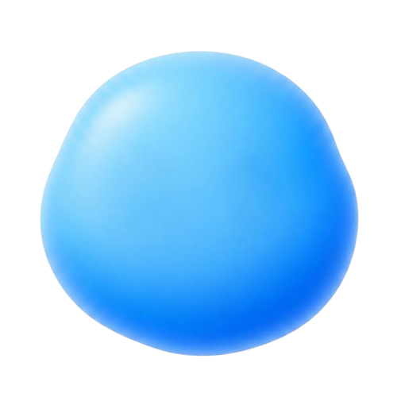

Mueve el raton sobre "Eye Tracking". Pulsa replay para repetir animaciones.
Idle → Monoculo aparece → Buscando → Eureka! / Se cae → Idle (en bucle, alterna exito y fallo)
Flujo
Idle → Se adormece → Dormido + Zzz → Se despierta con bounce → Idle
FlujoIdle → Pensando (wobble + dots) → Resultado (happy/error, alterna) → Idle
FlujoIdle → Mira abajo-derecha (usuario escribe) → Escaneo vertical (lee chat) → Peek desde arriba → Squish → Idle
FlujoEstado por defecto. Escala suave como si respirara.
IdleParpadeo aleatorio cada 2-5 segundos.
IdleTras inactividad. Ojos cerrados + Zzz al estilo emoji.
IdleDe dormido a despierto con bounce de sorpresa.
IdleIA generando respuesta. Wobble lateral + puntos.
InteraccionClick en palabra para ver referencia. Monoculo sobre ojo derecho.
InteraccionNo se encontraron referencias. El monoculo cae.
FeedbackCon monoculo puesto, ojos buscando de lado a lado.
InteraccionBounce + sparkles. Ojos intactos.
FeedbackWiggle de celebracion. Ojos intactos.
FeedbackSe aplasta elasticamente al hacer clic.
FunOjos en espiral + temblor.
FeedbackOjos miran al input. Se inclina hacia abajo-derecha.
InteraccionOjos recorren el chat arriba y abajo.
InteraccionSe asoma desde arriba del viewport.
FunMueve el raton sobre esta tarjeta.
Interaccion